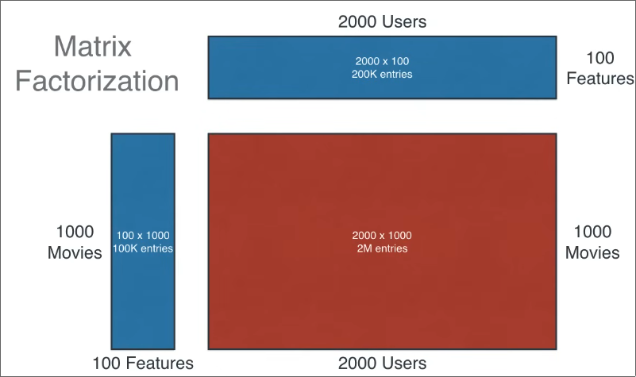

Recommendation Systems
Notes on collaborative and content based recommendation systems
There are three core algorithms behind recommendation systems:
- Collaborative Filtering
- Content-Based Filtering
- Hybrid Approach Filtering
Collaborative Filtering
Collaborative filtering algorithm attempts to predict what a user will like based on the patterns from other users, hence the name. It does not factor in the item content.
The advantage of collaborative filtering is that it can find more hidden patterns.
Even within collaborative filtering we have more approaches.
All methods start with the same object -
$$ R \in \mathbb{R}^{n_\text{user} \times n_\text{items}} $$and the goal is to be able to fill in the gaps in this table, ei estimate how much a user likes the given item and consequently also recommend it.
User-based
The idea for user based collaborative filtering is to find what other users like and recommend based on that.
-
Represent each user as a vector of item interactions such that $\bold{r_u} = {r_{u1}, \dots, r_{uM}}$
[Imagine a vector space where similar users are closer together]
-
Compute similarity between users by methods such as cosine similarity or Pearson correlation.
→ Cosine Similarity (Measures angle, not amplitude)
$$ \text{sim}(u,v) = \frac{\bold{r}_u \cdot \bold{r}_v }{||\bold{r}_u||||\bold{r}_v||} $$→ Pearson Similarity returns values between 0 and 1(adjusts for users that rate harshly or generously and also compares relative preferences)
$$ \text{sim}(u,v) = \frac{{}\sum_{i \in I_{uv}} (r_{ui} - \overline{r}_u)(r_{vi} - \overline{r_v})} {\sqrt{\sum_{i \in I_{uv}} (r_{ui} - \overline{r}_u)^2 \sum_{i \in I_{uv}} (r_{vi} - \overline{r}_v)^2}} $$Where $I_{uv}$ = set of items that both users like
$r_{ui}$ = rating by user $u$ to item $i$
$r_{vi}$ = rating by user $v$ to item $i$
$\overline{r}_{u}$ = average ratings of user $u$ across all items
$\overline{r}_{v}$ = average ratings of user $v$ across all items
Explanation for Pearson Correlation:
Consider the numerator: $\sum_{i \in I_{uv}} (r_{ui} - \overline{r}_u)(r_{vi} - \overline{r_v})$. Subtracting the means gives us the outliers. If the outliers are in similar directions, we will get a net positive (ei both users like/dislike the same things). Negative output means that they have opposite likings
Now consider the denominator: $\sqrt{\sum_{i \in I_{uv}} (r_{ui} - \overline{r}_u)^2 \sum_{i \in I_{uv}} (r_{vi} - \overline{r}_v)^2}$. Each term is like a standard deviation. This mainly normalizes the score to stay between 0 and 1
-
For a target user $u$, find top-$K$ users based on the above similarity
[Let this set of top $v$ users be $N(u)$ which could find through k-NN or something]
-
We predict the rating for an item $i$ for user $u$ based on the ratings of all top $K$ similar users $v$
$$ \hat r_{ui} = \frac{\sum_{v\in N(u)} \text{sim}(u,v) r_{vi}}{\sum_{v \in N(u)}|\text{sim}(u,v)|} $$
There are a few disadvantages to this approach though; it is slow to start for new users, slow at scale since users grow fast.
Item-based
This basically works the same way, here we recommend items similar to what items you already like
-
Treat each item as a vector of users $\bold{v}_i = (r_{1i},\dots)$ where the length is the number of items the user has already rated
-
Compute item-item similarity using cosine or Pearson method (as above)
→ Cosine similarity
$$ \text{sim}(u,v) = \frac{\bold{v}_i \cdot \bold{v}_j }{||\bold{v}_i||||\bold{v}_j||} $$→ Pearson similarity
Where $U_{ij}$ = set of users that have rated both item $i$ and $j$
$r_{ui}$ = rating by user $u$ to item $i$
$r_{uj}$ = rating by user $u$ to item $j$
$\overline{r}_{i}$ = average ratings of item $i$ across all users
$\overline{r}_{j}$ = average ratings of item $j$ across all users
$$ \text{sim}(i,j) = \frac{{}\sum_{u \in U_{ij}} (r_{ui} - \overline{r}_i)(r_{uj} - \overline{r_j})} {\sqrt{\sum_{u \in U_{ij}} (r_{ui} - \overline{r}_i)^2 \sum_{u \in U_{ij}} (r_{uj} - \overline{r}_j)^2}} $$ -
For user $u$ predict
$$ \hat r_{ui} = \frac{\sum_{j\in I(u)} \text{sim}(i,j) r_{uj}}{\sum_{j \in I(u)}|\text{sim}(i,j)|} $$
Matrix Factorization (Decomposition)
Matrix factorization (or decomposition) is the more modern method of collaborative filtering.
We estimate $R$ as a low rank product: $R \approx UV^T$ where $U \in \mathbb{R}^{n_u \times k}$ and $V \in \mathbb{R}^{n_i \times k}$
[Here, $k$ = the latent dimension,
Row $U_u$ = latent vector for user $u$
Row $V_i$ = latent vector for item $i$
Each row is a point in $\mathbb{R}^k$]
What are latent dimensions?
Latent dimensions are abstract concepts that the model extracts from the user-item interaction matrix. For example, “liking romance”, “liking slow pacing”, etc
Remember, this is not labeled data, these are emergent co-occurring patterns.
The user latent vector encodes the preferences of the user while the item latent vector encodes the attributes/traits of the items.
For a user $u$ and item $i$, the prediction equation is a dot product
$$ \hat r_{u,i} = U_u \cdot V_i $$If the user preferences align with item attributes, we get a large score otherwise we get a low score.
The goal here, is to learn the latent vectors whose dot product approximates the ratings. There are a few algorithms that allow doing so - such as SVD (singular value decomposition), SVD++, Non Negative Matrix Factorization (NMF), Alternating Least Squares (ALS), SGD
Matrix factorization also helps reduce the used up space, you can see how matrices can be used to optimize storage utilization.


The above graph is a representation of the block diagram above
Initially since we have no idea of what each user likes, we start with random latent vectors.
Let $\Omega = \{(u,i): R_{u,i} \text{ is observed}\}$ [Basically, $\Omega$ is the set of user-item interactions that have happened.]
Now for Gradient Descent, we define the cost function:
$$ J(U,V) = \sum_{u,i \in \Omega} (R_{u,i} - U_u \cdot V_i)^2 + \lambda(\sum_u ||U_u||^2 + ||V_i||^2) $$Where the first term is very close to linear regression and the second term is the regularization term. $\lambda$ is the regularization factor. For all pairs $(u,i)$, we train
$$ U_u -= \alpha \frac{\partial J}{\partial U_u} \\ Vi -= \alpha \frac{\partial J}{\partial V_i} $$where, the gradient is as follows
$$ \frac{\partial J}{\partial U_u} = -2(R_{u,i} - U_u \cdot V_i) V_i + 2\lambda U_u = \frac{\partial J}{\partial U_u} = -(R_{u,i} - U_u \cdot V_i) V_i + \lambda U_u \\ \frac{\partial J}{\partial V_i} = -(R_{u,i} - U_u \cdot V_i) V_i + \lambda U_u $$The matrix factorization approach is very good at capturing co-occurrence, scaling to millions of users and items, and can win against noisy and sparse data. It still has problems of cold start and assumes linear interactions. However, this can be extended using neural networks to extend beyond.
[How??]
Why is matrix factorization fast and scalable?
You update one user vector and one item vector for each rating making cost $O(k)$
Geometric Intuition
Users and items like in the same latent space $\mathbb{R}^k$ where $k$ is the dimension of latent space. Recommendation is computing the nearest item vectors in the same direction of user vector. This is sort of a merger between user-user and item-item collaborative filtering.
Working with Binary Labels
Consider when our dataset using a rating system consisting of binary values - “user clicked video”, “user watched for 30 seconds”, etc
The new rating prediction algorithm becomes not just a raw score, but a probability $\hat p_{u,i} = \sigma(U_u \cdot V_i)$ where $\sigma$ is our good ol’ friend $\sigma = \frac{1}{1 + e^{-x}}$
Instead of MSE loss, we will use Binary Cross-Entropy Loss function to calculate our cost and work with gradient descent.
[Here $y_{u,i}$ is the label for the training data]
$$ J(U,V) = \sum_{u,i \in \Omega} -[y_{u,i} \log(\hat p _{u,i})+ (1-y_{u,i}) \log(1- \hat p _{u,i})] + \lambda(\sum_u ||U_u||^2 + ||V_i||^2) $$Gradient descent goes as usual with the algorithm.
We run into quite a few problems with this method however:
-
Binary cross-entropy assumes that every example is either positive or negative (likes and dislikes) which works fine.
$\mathbb{P}(y=1 : u,i) + \mathbb{P}(y=0 : u,i) = 1$
But what if there are no dislikes? Only likes. Since $\Omega$ is only defined for ratings that exist, $\Omega$ just becomes a completely positive set. The cost function collapses to
$$ J(U,V) = \sum_{u,i \in \Omega} -y_{u,i} \log(\hat p _{u,i}) + \lambda(\sum_u ||U_u||^2 + ||V_i||^2) \\ = \sum_{u,i \in \Omega} -y_{u,i} \log(\sigma(U_u \cdot V_i)) + \lambda(\sum_u ||U_u||^2 + ||V_i||^2) $$As a result $U_u \cdot V_i \to \infin$ till regularization stops it, and everything breaks. This is why binary cross-entropy loss has implicit false negatives when we considering ranking and recommendation
-
In recommender data, positives are very few and many many negatives. The model learns that predict 0 for everything, and still get 99.9% accuracy due to the extreme class imbalance
-
Binary Cross Entropy is made for classification, not ranking. Does not work well with top $K$ rankings since large values are evaluated in sigmoid as close to one.
Solution
Option 1: Negative Sampling (YouTube style): Treating observed interactions as positive and small number of unobserved items as negatives. Also only apply Binary Cross Entropy to sampled pairs
Option 2: Use confidence weighted implicit matrix factorization (Spotify, Industry standard)
Instead of pure binary labels, define $p_{u,i} = \begin{cases} 1; & \text{ if interaction} \\ 0; & \text{ otherwise} \\ \end{cases}$
Make a confidence score $c_{u,i} = 1 + \alpha \cdot f_{u,i}$ where $f_{u,i}$ is the number of interactions and $\alpha$ is the scaling factor.
Our objective function is
$$ \min_{U,V} \sum_{u,i} c_{u,i} (p_{u,i} - U_u \cdot V_i)^2 + \lambda (||U_u||^2 + ||V_i||^2) $$Mean Normalization
To prevent the model from being thrown off by missing data and bias. We subtract the means, work our algorithm and then add back the mean to our predictions
-
For user-user collaborative filtering, similarity algorithms such as cosine similarity compare absolute ratings. (Pearson correlation is more immune). Here we subtract user means
$$ r'_{u,i} = r_{u,i} - \overline r_u $$and similarity becomes $\text{sim}(u,v) = \text{corr}(r'_u, r'_v)$
Our prediction becomes
$$ \hat r_{u,i} = \overline r_u + \frac{\sum_{v\in N(u)} \text{sim}(u,v) r_{vi}}{\sum_{v \in N(u)}|\text{sim}(u,v)|} $$ -
For item-item collaborative filtering, the situation is similar. Here the bias is item popularity, ei number of ratings for each item. We subtract item mean
$$ ⁍ $$Similarity $\text{sim}(i,j) = \text{corr}(r'_i, r'_i)$
Our prediction becomes
$$ \hat r_{u,i} = \overline r_u +\frac{\sum_{j\in I(u)} \text{sim}(i,j) r_{uj}}{\sum_{j \in I(u)}|\text{sim}(i,j)|} $$ -
Mean normalization for matrix factorization also fixes bias. We write down our model as
$$ ⁍ $$Where, $\mu$ = global average rating, $b_u$ = user bias (rates always higher or lower), $b_i$ = item bias (popular, unpopular)
-
For binary matrix factorization, we shift the logits (ie, the argument of $\sigma$). We normalize in logit space, not data space.
$$ \hat p_{u,i} = \sigma (\mu + b_u + b_i + U_u \cdot V_i) $$
TensorFlow Implementation for Collaborative Filtering
Once we write the cost function and gradient descent algorithm, we can use TensorFlow’s automatic differentiation to compute all gradients for us and optimize the parameters efficiently.
For collaborative filtering, we want to minimize the cost function:
$$ J(W, b, X) = \frac{1}{2} \sum_{(i,j): R_{ij}=1} \left( w^{(j)} \cdot x^{(i)} + b^{(j)} - y_{ij} \right)^2 + \frac{\lambda}{2} \left( \sum_j \|w^{(j)}\|^2 + \sum_i \|x^{(i)}\|^2 \right) $$We update the parameters using gradient descent:
$$ W := W - \alpha \frac{\partial J}{\partial W} $$$$ b := b - \alpha \frac{\partial J}{\partial b} $$$$ X := X - \alpha \frac{\partial J}{\partial X} $$Instead of manually computing these derivatives, TensorFlow’s GradientTape will do it automatically for us.
import tensorflow as tf
# Trainable variables
X = tf.Variable(X_init, dtype=tf.float32)
W = tf.Variable(W_init, dtype=tf.float32)
b = tf.Variable(b_init, dtype=tf.float32)
alpha = 1e-2
iterations = 200
for iter in range(iterations):
with tf.GradientTape() as tape:
cost_value = cofiCostFunc(
X, W, b,
Ynorm, R,
num_users,
num_movies,
lambda_
)
grads = tape.gradient(cost_value, [X, W, b])
# Manual gradient descent step
X.assign_sub(alpha * grads[0])
W.assign_sub(alpha * grads[1])
b.assign_sub(alpha * grads[2])
if iter % 20 == 0:
print(f"Iteration {iter}, cost: {cost_value.numpy():.4f}")Limits of Collaborative Filtering
- Cold Start: Collaborative filtering has the issue of sparse user-item matrices $R \in \mathbb{R}^{n_{\text{users}} \times n_{\text{items}}}$ - ranking items that few users have rated and recommending something reasonable that users that have not rated much is more random at the start
- We don’t use side information about users and items such as movie genre, movie stars, movie studio, user age, gender, location,
Content Based Filtering
Content based recommendation systems work by creating embedding vectors for users and items similar to matrix factorization based collaborative filtering.
Here, again we work with a user-item interaction matrix $R \in \mathbb{R}^{n_{\text{users} }\times n_{\text{items}}}$
Instead of latent item vectors, each item is embedded as an explicitly defined feature vector $\vec x_{\text{item}}^{(i)}$.
[For example, the genre of a movie can be one-hot encoded as features, the year of release, average rating across users that have rated it, etc]
Each user embedding vector $\vec x_{\text{user}}^{(j)}$ where each parameter represents the user’s preferences and data.
Unlike matrix factorization, the size of item and user vectors can be different.
We learn projection functions such that
$$ V_{\text{item}}^{(i)} = f(x_{\text{item}}^{(i)}) \\ V_{\text{user}}^{(j)} = g(x_{\text{user}}^{(j)}) \\ $$where $f, g$ can be neural networks, linear models, transformers, etc and $V_\text{item}, V_\text{user} \in \mathbb{R}^{k}$q
[They must be the same dimension now]
We predict the ratings by the dot product
$$ r_{u,i} = V_\text{user}^{(j)} \cdot V_\text{item}^{(i)} $$Learning projection functions $f, g$
We will use deep learning through neural networks to learn the mappings from $\vec x \to \vec V$ for both items and user feature vectors.

Note that it is essential that $V_\text{user}, V_\text{item}$ have the same dimension $k$
For binary labels instead of 1-5 star ratings, we can compute the probability that $y_{u,i} = 1$ by using the sigmoid function
$$ p_{u,i} = \sigma(V_u, V_i) $$For 1-5 star like rating system, we use the cost function
$$ J = \sum_{(i,j):r(i,j) =1} (V^{(j)}_\text{user} \cdot V^{(i)}_\text{item} - y^{(i,j)})^2 + \text{NN Regularization Term} $$[Don’t forget that this cost function will optimize BOTH neural networks since $V_\text{user}^{(j)} \cdot V_\text{item}^{(i)} = f(x_\text{user}^{(j)}) \cdot g(x_\text{item}^{(i)})$ ]
After gradient descent and learning the parameters for users and item vectors $V_\text{user}^{(j)}, V_\text{item}^{(i)}$, we can compute item $k$ similar to $i$ using $||v_\text{item}^{(k)} - v_\text{item}^{(i)}||^2$. We don’t need to find similar items every time the user queries, instead we can pre-compute this before the user even logs on.
You can see how we optimized multiple neural networks by defining a cost function on a combination of their outputs.

Computational Graph
TensorFlow Implementation of Content-Based Filtering
import tensorflow as tf
from tensorflow.keras import Model
user_NN = tf.keras.models.Sequential([
tf.keras.layers.Dense(256, activation='relu'),
tf.keras.layers.Dense(128, activation='relu'),
tf.keras.layers.Dense(32)
])
item_NN = tf.keras.models.Sequential([
tf.keras.layers.Dense(256, activation='relu'),
tf.keras.layers.Dense(128, activation='relu'),
tf.keras.layers.Dense(32)
])
input_user = tf.keras.layers.Input(shape=(num_user_features,))
vu = user_NN(input_user)
vu = tf.linalg.l2_normalize(vu, axis=1)
input_item = tf.keras.layers.Input(shape=(num_item_features,))
vm = item_NN(input_item)
vm = tf.linalg.l2_normalize(vm, axis=1)
output = tf.keras.layers.Dot(axes=1)([vu, vm])
model = Model([input_user, input_item], output)
cost_fn = tf.keras.losses.MeanSquaredError()
optimizer = tf.keras.optimizers.Adam(learning_rate=1e-3)
model.compile(optimizer=optimizer, loss=cost_fn)Interpretation
-
The two neural networks learn feature projections into a shared embedding space.
-
L2 normalization makes the dot product behave like cosine similarity.
-
The dot layer computes:
$$ v_u^\top v_m $$ -
The model is trained by minimizing Mean Squared Error between predicted and actual ratings.
Scaling Recommendation Systems
Large scale recommendation systems break down their process into two parts.
-
Retrieval
Here, we generate a list of plausible item candidates such as last 10 movies watched by the user, top 3 genres of books the user has read, top TV shows in the country, etc
We remove duplicates, shows already watched and clean up the list.
Retrieving more items improves performance but makes the recommendation system slower due to increased computation. To analyze and optimize the tradeoff, we must do offline experiments to see if additional recommendations are more relevant (ie, probability $p(y_{u,i}) = 1$ is higher).
-
Ranking
This is where we take the retrieval list and rank using the learned model. We display the ranked items to the user.
This process can reduce literally millions of inference calls to just a few thousand or hundred, making it more computationally feasible